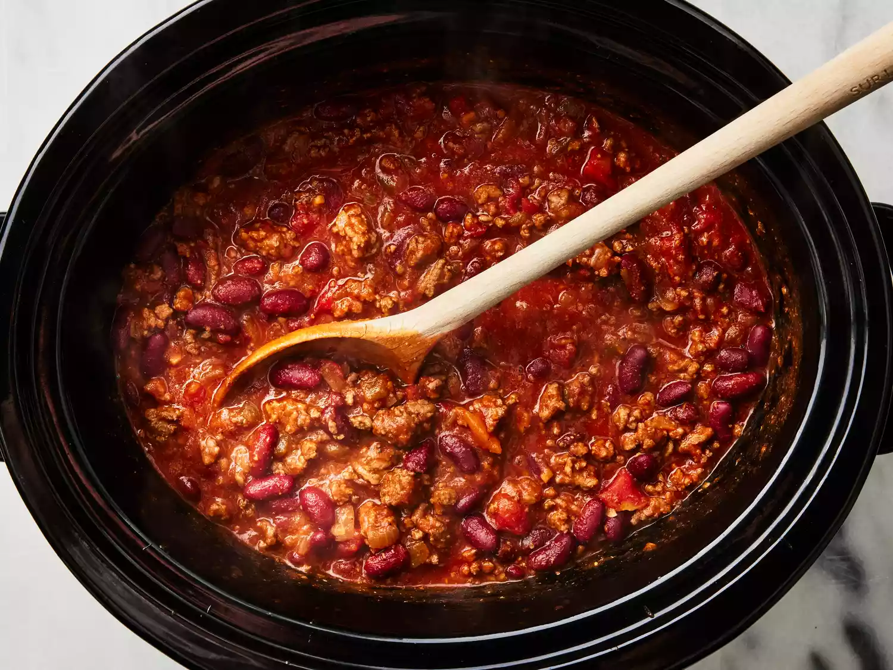

A hot bowl of homemade chili!
What's better than warm and hearty chili with beans? Warm and hearty chili with beans that's made extra simple in the slow cooker.
This easy chili recipe is the perfect set-it-and-forget-it meal for those busy nights when you want comfort food without the hassle
Ingredients
- 2 tablespoons olive oil
- 1 large onion, chopped
- 2 cloves garlic, minced, or more to taste
- 2 pounds lean ground beef
- 2 (16 ounce) cans kidney beans, rinsed and drained
- 1 (28 ounce) can diced tomatoes
- 1 (15 ounce) can tomato puree
- 1 cup water
- 1 (4 ounce) can chopped green chile peppers
- 2 tablespoons mild chili powder
- 2 teaspoons salt
- 2 teaspoons ground cumin
- 1 teaspoon ground black pepper
Steps
- Heat oil in a large skillet over medium-low heat.
Add onion and garlic; cook and stir until onion is translucent, about 5 minutes.
Add ground beef; cook and stir until browned, 8 to 10 minutes.
- Transfer beef mixture to a 6-quart slow cooker.
Stir in kidney beans, diced tomatoes, tomato puree, water, green chile peppers, chili powder, salt, cumin, and black pepper.
- Cook on Low until flavors combine, 4 to 6 hours.
- Serve hot and enjoy!